Linux 6.1.36_User’s Compilation Manual_V1.0
Document classification: □ Top secret □ Secret □ Internal information ■ Open
Copyright
The copyright of this manual belongs to Baoding Folinx Embedded Technology Co., Ltd. Without the written permission of our company, no organizations or individuals have the right to copy, distribute, or reproduce any part of this manual in any form, and violators will be held legally responsible.
Forlinx adheres to copyrights of all graphics and texts used in all publications in original or license-free forms.
The drivers and utilities used for the components are subject to the copyrights of the respective manufacturers. The license conditions of the respective manufacturer are to be adhered to. Related license expenses for the operating system and applications should be calculated/declared separately by the related party or its representatives.
Overview
This manual is designed to enable users of the Forlinx Embedded development board to quickly understand the compilation processof the products and familiarize themselves with the compilation methods of Forlinx products. The application needs to be cross-compiled on an ubuntuhost before it can run on the development board. By following the methods provided in the compilation manual and performing practical operations, you will be able to successfully compile your own software code.
The manual will provide instructions for setting up the environment but there may be some unforeseen issues during the environment setup process. For beginners, it is recommended to use the pre-configured development environment provided by us. This will allow you to quickly get started and reduce development time.
Linux systems are typically installed in three ways: dual system on a real machine, single system on a real machine, and virtual machine. Different installation methods have their advantages and disadvantages. This manual only provides methods to build ubuntu in a virtual machine.
Hardware Requirements: It is recommended to have at least16GB memory or above.It allows for allocating a sufficient memory to the virtual machine (recommended to allocate10GBor above), while still leaving enough resources for other operations onWindows. Insufficient memory allocation may result in slower performance onWindows.
The manual is mainly divided into four chapters:
Chapter 1. Virtual Machine software installation - introduction to downloading and installing Vmware software;
Chapter 2. provides the loading of the ubuntu system;
Chapter 3. Building, setting up, and installing necessary tools for the Ubuntu system and common issues in development environments;
Chapter 4. Compiling the kernel and Linux-related source code.
A description of some of the symbols and formats associated with this manual:
Format |
Meaning |
|---|---|
Note |
Note or information that requires special attention, be sure to read carefully. |
📚 |
Relevant notes on the test chapters. |
️️️🛤️ ️ |
Indicates the related path. |
Blue font on gray background |
Refers to commands entered at the command line(Manual input required). |
Black font |
Serial port output message after entering a command. |
Bold black |
Key information in the serial port output message. |
// |
Interpretation of input instructions or output information. |
Username@Hostname |
forlinx @ ubuntu: Development environment ubuntu account information, which can be used to determine the environment in which the function operates. |
Note: Please do not skip this paragraph：
The development environment is the hardware and software platform that developers need during the development process. The development environment is not a fixed style, here, we explain in detail an embedded Linux development environment to build the method. If you already know a lot about embedded development, you can build the environment according to your needs. If the environment is not the same as this manual and an error occurs, you can resolve it by searching for relevant information from some of the big Linux forums and websites. The development environment introduced in this manual has passed Forlinx’s rigorous testing. If you are not very familiar with embedded development, it is recommended that you set up the environment according to the methods provided by Forlinx to ensure the accuracy and stability of the environment setup.
Versions :
Operating System: Ubuntu 20.04 64-bit
Disk capacity: more than 80G
Cross toolchain: aarch64-poky-linux-gcc
Application Scope
This manual is mainly applicable to the Linux6.1.36 operating system on the Forlinx OK-MX8MPX-C-C platform. Other platforms can also refer to it, but there will be differences between different platforms. Please make modifications according to the actual conditions.
Revision History
Date |
Manual Version |
SoM Version |
Carrier Board Version |
Revision History |
|---|---|---|---|---|
29/04/2025 |
V1.0 |
V2.1 |
V3.1 and Above |
OK-MX8MPQ-C Linux6.1.36 User’s Compilation Initial Version |
1. VMware Virtual Machine Software Installation
This chapter mainly introduces the installation ofVMware virtual machines, using VMware Workstation 15 Pro v15.1.0as an example to demonstrate the installation and configuration process of the operating system.
1.1 VMware Software Downloads and Purchase
Go to the VMware website https://www.vmware.com/cn.html to download Workstation Pro and get the product key. VMware is a paid software that requires purchasing, or you can choose to use a trial version.

After the download is complete, double-click the startup file to start the installer.
1.2 VMware Software Installation
Step 1: Double-click the startup program to enter the installation instructions, and click “Next”;
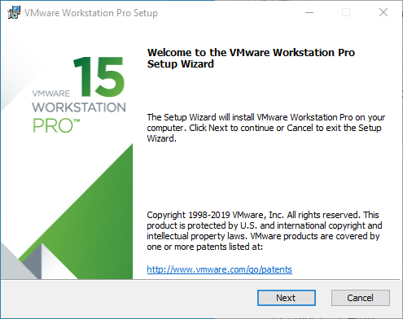
Step 2: Check “I accept the terms of the license agreement†and click “Next”;
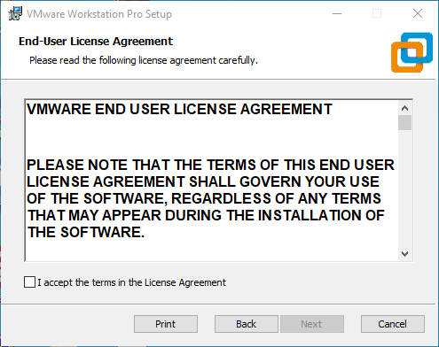
Step 3: You can modify the installation location, install it to the partition where your computer installs software, and click “Next”;
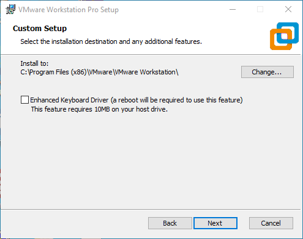
Step 4: Check the option and click “Next”;

Step 5: Check the option to add the shortcuts and click “Next”；
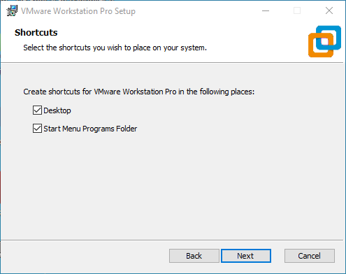
Step 6：Click “Install”；

Step 7：Wait for the installation to complete；
 ****
****
Step 8：Click “Finish†to try it out. If users need to use it for a long time, they need to buy it from the official and fill in the license.
2. Loading the Existing Ubuntu Development Environment
Note:
It is recommended for beginners to directly use the pre-built virtual machine environment provided by Forlinx, which already includes installed cross-compiler and Qt environment. After understanding this chapter, you can directly jump to the compilation chapter for further study;
The development environment provided for general users is: forlinx (username), forlinx (password);
Please ask your sales representative for the download link.
There are two ways to use a virtual machine environment in VMware: one is to directly load an existing environment, and the other is to create a new environment. Let’s first talk about how to load an existing environment.
Step 1: Download the development environment provided by Forlinx. There is MD5 verification file in the development environment data. After downloading the development environment data, first perform MD5 verification on the compressed package of the development environment (MD5 verification can be performed by selecting MD5 online tools on the network, or by downloading MD5 verification tools, which can be selected according to the actual situation). Check whether the verification code is consistent with the verification code in the verification file. If they are consistent, the downloaded file is normal; otherwise, the file may be damaged and needs to be downloaded again;
Step 2: Select all compressed files, right-click and extract to the current folder or your own directory:
Step 3: After decompression, get the development environment OK8MP-Linux6.1.36-VM_17_5_2-ubuntu20_04
The file “forlinx.vmx†in the OK8MP-Linux6.1.36-VM_17_5_2-ubuntu20_04 folder is the file that you need to open to access the virtual machine.
Step4: Open the installed virtual machine;

Step 5: Select the directory where the OK8MP-Linux6.1.36-VM_17_5_2-ubuntu20_04 file you just unzipped and generated is located, and double-click to open the startup file:
Step 6: Turn on this virtual machine after loading is complete to run it and enter the system’s interface;

Step 7: The default automatic login account is forlinx, and the password is forlinx.

3. New Ubuntu Development Environment Setup
Note: Beginners are not recommended to set up a system on their own. It is recommended to use an existing virtual machine environment. If you do not need to set up the environment, you can skip this section.
Ubuntu is a Linux operating system distribution primarily focused on desktop applications. Ubuntu has many advantages and offers its own strengths compared to other Linux distributions. First of all, installing the system is very easy, requiring very little setup, and is fully comparable to a Windows desktop system; secondly, the GUI is very user-friendly and mimics the shortcuts that are commonly used under XP; when installing and upgrading programs, you can install the dependent packages by the system itself through the network, so you don’t have to worry about the dependencies of the Linux system anymore. Considering everyone’s usage habits and learning needs, it would be a good choice to use Ubuntu Linux.
There are numerous versions of Linux desktop systems, and currently, all the Linux experiments and source code in this manual are performed on the Ubuntu 22.04 system. With other versions of Linux desktop systems, problems related to the gcc compiler and library files may occur. If you encounter similar issues, you can seek advice and inquire on the official forums of the Linux distribution vendor. If you are not familiar with Linux, the method introduced by Forlinx is highly recommended.
Why do we need to install these things? Because we need a Linux environment to do development work. We can’t compile Kernel source code, Qt applications, uboot and so on under Windows. We need to do these work under Linux environment. Given that most users are accustomed to the Windows environment, we use VMware software to provide Ubuntu virtual machines. Of course, you can also install Linux on your computer or server for development.
This chapter mainly explains the process of setting up the Ubuntu system and installing Qt Creator. If the user is not using Qt, the installation of Qt Creator can be ignored.
Next, it introduces the process of building the virtual machine.
3.1 Ubuntu Virtual Machine Setup
The specific method is as follows:
The version of Ubuntu we chose to install is 20.04, and the introduction and development in this maual are all carried out on Ubuntu20.04. First, go to the Ubuntu official website to get the Ubuntu 20.04 64-bit image. The download address is: [http://releases.ubuntu.com/20.04/](http://releases.ubuntu.com/20.04/)
Step 1: Download “Ubuntu-20.04.6-desktop-amd64.iso†(you can download the version that you actually need; this is just an example with 20.04.6);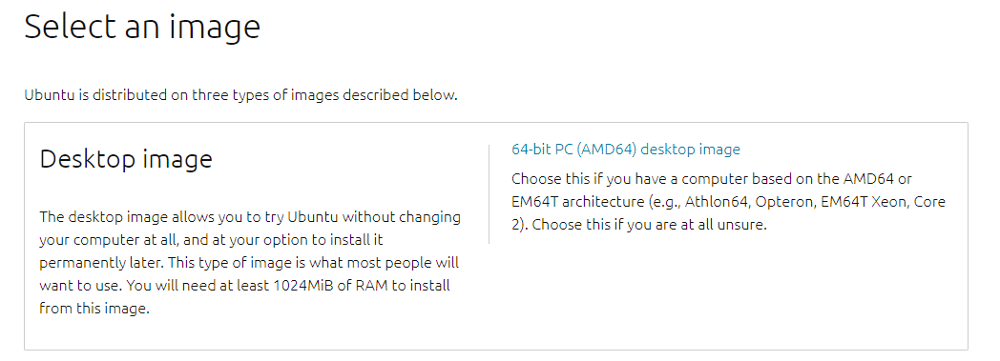
Step 2: Open the VMware software and click [File]/ [New Virtual Machine]. Enter the following interface, check “Customize†and click “Next”:
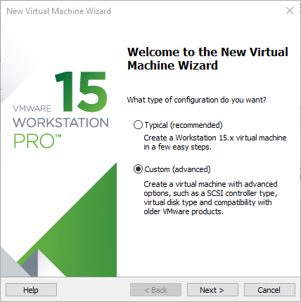
Step 3: Select the compatibility of the corresponding VMware version. The version can be viewed in Help-> About VMware Workstation. Click “Next†after confirmation:

Step 4: Select “Install program from disc image file”, then click “Next”；

Step 5: Enter full name, user name and password, and click “Next”:

Step 6: Enter the virtual machine name and configuration installation location and click “Next”:

Step 7: Allocate a disk size of 80G and divide the virtual disk into multiple files (it is recommended to allocate at least 80G of space for the virtual machine environment), and click Next:

Step 8: Enter the virtual machine name and configuration installation location and click “Next”:
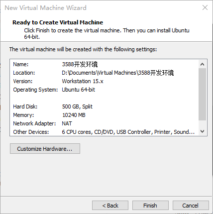
Step 9: Allocate memory. It is recommended to allocate more than 8GB of memory:

Step 10: Configure the number of CPU cores. It is recommended to allocate more than 4 CPUs:

Step 11: The basic configuration is as follows:

The virtual machine creation is now complete.
Step 12: Then click “Start this virtual machine†to start installing the image. Wait patiently.
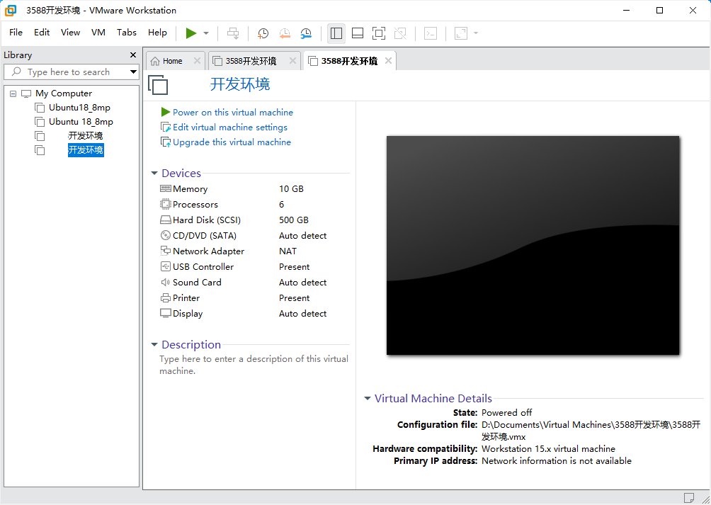
The ubuntu system installation is complete.
3.2 Basic configuration of Ubuntu system
3.2.1 VMware Tools Installation
VMware Tools will be installed automatically after the virtual machine is created. If it is not successful, follow the steps below.
If you do not install the tool, you cannot use copy-paste file drag and drop between the Windows host and the virtual machine.
Step 1: First, click on “Virtual Machine†in the VMware navigation bar, and then click on “Install VMware Tools†in the drop-down box;

Step 2: Enter Ubuntu after completion. The VMware Tools CD will appear on the desktop. Click to enter it;

Step 3: Enter, you’ll see a compressed file named VMwareTools - 10.3.10 - 12406962.tar.gz (the name may vary depending on different virtual machine versions). Copy this file to the home directory (i.e., the directory under the personal username in the home folder);

Step 4: Press 【Ctrl + Alt + T】 to bring up the terminal command interface and enter the commands:
forlinx@ubuntu:~$ sudo tar -xvf VMwareTools-10.3.10-12406962.tar.gz
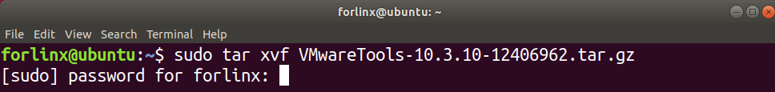
Step 5: After the extraction is completed, a folder named vmware-tools-distrib will appear;

Step 6: Go back to the terminal. Enter: cd vmware-tools-distrib to enter this directory.
Then enter: sudo ./vmware-install.pl. Press Enter and then enter your password. After that, the installation will start. When prompted with a question, enter yes. For other prompts, just press Enter to accept the default settings for installation.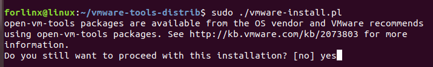
3.2.2 Virtual Machine Full Screen Display
If the virtual machine is not able to be displayed in full screen, you can resolve this issue by clicking on “View†and selecting “Autofit Guest.†This will adjust the display to fit the screen automatically, enabling you to have a full-screen experience in the virtual machine.

Make most of the system settings in the location shown. A lot of the setup requirements on Ubuntu can be done here.
3.2.3 Virtual Machine Hibernation Settings
Also, the default hibernation is 5min, if you don’t want to set hibernation, just set it to Never by setting Power->Blank screen.

3.3 Virtual Machines Network Settings
3.3.1 NAT Connection Method
By default, after the virtual machine is installed, the network connection method is set to NAT, which shares the host machine’s IP address. This configuration does not need to be changed when performing tasks like installing dependencies or compiling code.
When the VMware virtual NIC is set to NAT mode in a virtual machine, the network in the Ubuntu environment can be set to dynamic IP. In this mode the virtual NAT device and the host NIC are connected to communicate for Internet access. This is the most common way for VM to access the external network.
3.3.2 Bridge Connection
When the VMware virtual NIC device is in bridge mode, the host NIC and the virtual machine NIC communicate through the virtual bridge, and the network IP and the host need to be set in the same network segment in the Ubuntu environment. If accessing an external network, you need to set the DNS to be consistent with the host NIC. If TFTP, SFTP and other servers are used, the network contact mode of the virtual machine needs to be set as the bridge mode.
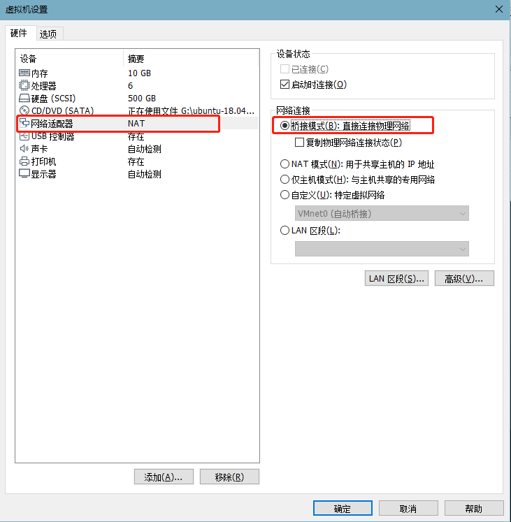
3.4 Virtual Machine Software Installation
3.4.1 Common Software Installation
It is recommended to switch to the root user before use to avoid installation or compilation failure due to insufficient permissions:
forlinx@ubuntu:~$ sudo su
[sudo] password for forlinx:
root@ubuntu:/home/forlinx#
To install the necessary toolkit for OK-MX8MPX-C compilation, please execute the following command to install it, and make sure that the network can be used normally and you can access the external network before installation:
root@ubuntu:~$ sudo apt-get update
forlinx@ubuntu:~$ sudo apt-get install openssh-server vim git fakeroot make automake \
autoconf libtool libssl-dev bc dosfstools mtools parted iproute2 kmod \
libyaml-dev device-tree-compiler python flex bison build-essential \
u-boot-tools libncurses-dev lib32stdc++6 lib32z1 libc6:i386 python3-pip pip zstd swig \
python-dev python3-dev uuid-dev libghc-gnutls-dev cmake build-essential libgl1-mesa-dev libglu1-mesa-dev freeglut3-dev
forlinx@ubuntu:~$ sudo apt install --reinstall libxcb-xinerama0
forlinx@ubuntu:~$ sudo python3 -m pip install launchpadlib
3.4.2 Qt Creator Installation
️Path: User Data\Software Data\3 - Tools\qt - creator - opensource - linux - x86_64 - 11.0.3.run
Copy the file qt - creator - opensource - linux - x86_64 - 11.0.3.run to any directory under the current user’s directory in the virtual machine, and then execute:
forlinx@ubuntu:~$ chmod 777 qt-creator-opensource-linux-x86_64-11.0.3.run
forlinx@ubuntu:~$ ./qt-creator-opensource-linux-x86_64-11.0.3.run
Step 1: The following interface pops up, and click “Next†to enter the next step:
Note: Turn off the network and install Qt Creator without logging in to the Qt account.
Step 2: Click “Next†to go to the next step:
Step 3: In the following interface, click “Browse…†to select the installation path of Qtcreator, after the selection is complete, click “Next†to enter the next step:
Step 4: The following interface pops up, and click “Next†to enter the next step:
Step 5: Agree to the agreement and click “Next”:
Step 6: Click Install to install:
Step 7: After the installation is completed, the following interface will be displayed. Uncheck the option “Launch Qt Creator†“and click†Finish “to complete the installation steps of Qt Creator:
Go to the /home/forlinx/ -11.0. 3/bin/ directory of the actual qtcreator installation directory:
forlinx@ubuntu:~$ cd /home/forlinx/qtcreator-11.0.3/bin/
forlinx@ubuntu: ~/qtcreator-11.0.3/bin$ sudo ./qtcreator
[sudo] password for forlinx: forlinx //输入forlinx用户的密ç ï¼Œæ— å›æ˜¾
QStandardPaths: XDG_RUNTIME_DIR not set, defaulting to '/tmp/runtime-root'
QStandardPaths: XDG_RUNTIME_DIR not set, defaulting to '/tmp/runtime-root'
The Qt Creator tool screen appears. Qt Creator is installed.
3.4.3 Qt CREATOR Configuration
Install the cross-compilation tool
root@ubuntu:/home/forlinx/work/OK-MX8-linux-sdk# ./fsl-imx-xwayland-glibc-x86_64-forlinx-image-qt6-full-armv8a-fet-mx8mp-c-toolchain-6.1-mickledore.sh
NXP i.MX Release Distro SDK installer version 6.1-mickledore
============================================================
Enter target directory for SDK (default: /opt/fsl-imx-xwayland/6.1-mickledore):/opt/fsl-imx-xwayland/6.1-mickledore-imx8mp
Set the installation path, enter
/opt/fsl-imx-xwayland/6.1-mickledore-imx8mp
The cross-compilation tool chain is automatically installed in the/opt directory when compiling the SDK for the first time. The Qt compilation environment needs to be configured after the cross-compilation tool chain is installed
First open the Qt Creator software.
Step 1: Navigate to the actual installation directory of Qt Creator, which is /home/forlinx/qtcreator-11.0.3/bin;
forlinx@ubuntu:~$ cd /home/forlinx/qtcreator-11.0.3/bin
forlinx@ubuntu: ~/qtcreator-11.0.3/bin $ sudo ./qtcreator
[sudo] password for forlinx: forlinx //输入forlinx用户的密ç ï¼Œæ— å›æ˜¾
QStandardPaths: XDG_RUNTIME_DIR not set, defaulting to '/tmp/runtime-root'
Step 2: Launch the Qt Creator program. Click on “Edit†-> “Preferences”;
Step 3: Once you’re in the Preferences interface, click on “Kits†on the left side. Then click on the “Compilers†tab in the upper - middle area. Click on “Add -> GCC -> C++†on the right side, as shown in the figure;
specify the Compiler path. Click on “Browse”. Find “aarch64 - poky - linux - g++†under /opt/fsl - imx - xwayland/6.1 - mickledore - imx8mp/sysroots/x86_64 - pokysdk - linux/usr/bin/aarch64 - poky - linux/. After selecting it, click on “Open”. Change the Name to “G++”, and finally click on “Apply†to save the configuration;
Step 4: Add the GCC compiler in the same way. Click on “Add -> GCC -> C†on the right side. The Compiler path for GCC is: /opt/fsl - imx - xwayland/6.1 - mickledore - imx8mp/sysroots/x86_64 - pokysdk - linux/usr/bin/aarch64 - poky - linux/aarch64 - poky - linux - gcc, as shown in the figure;
Step 5: Refer to the steps for adding compilers to add Debuggers. The Path for Debuggers is: /opt/fsl - imx - xwayland/6.1 - mickledore - imx8mp/sysroots/x86_64 - pokysdk - linux/usr/bin/aarch64 - poky - linux/aarch64 - poky - linux - gdb;
Step 6: Click on the “Qt Versions†tab and then click on “Add”. Find “qmake†in the directory /opt/fsl - imx - xwayland/6.1 - mickledore - imx8mp/sysroots/x86_64 - pokysdk - linux/usr/bin/. After selecting it, click on “Open”. After adding, it will be displayed as follows. Then click on “Apply”;
Step 7: Click on the “Kits†tab. Click on “Add†on the right side to add a new Kit. Name it “imx8mp”. Make modifications according to the content in the following figure and then click on “Apply”;
3.5 Handling Virtual Machine Error Reports
Error 1: Unable to connect to MKS: Too many socket connection attempts; giving up.
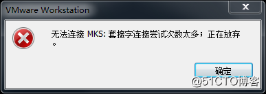
Solution:
My Computer -> Right click -> Management -> Services and Applications -> Services: turn on all the services about VMware.

After the service has started successfully, restart the virtual machine; or hang the virtual machine first, wait for it to start, and then continue to run the hung virtual machine
Error 2: Internal error
Solution: Refer to solution 1
Error 3: Unable to install service VMware Authorization Service (VMAuthdService)
Solution:
win+R Enter the services. Msc.
Then find the service and start it up as an authorization and authentication service for starting and accessing virtual machines.
WMI must start first.
Error 4：Failed to install the hcmon driver

Solution: Delete C:\Windows\System32\drivers\hcmon.sys, then install again.
Error 5: Intel VT-x is disabled
Solution:
① Enter the BIOS interface (F2 or F12) when booting.
â‘¡configuration–》intel virtual technology–》Change “disabled†to “enabled”, then save the settings, exit the program, and restart the device.
③Reopen VMware and turn on the virtual machine.
If that doesn’t work, just turn the firewall off and reopen the VM. (varies by machine)
Error 6: The virtual machine appears to be in use… Acquiring Ownership (T)
Solution:
1. Shut down the virtual machine;
2. Navigate to the storage directory of the virtual machine and delete all files with the extension *.lck. Here, the “.lck†extension indicates locked files;
3. Open the Windows Task Manager and terminate all VMware - related processes;
Restart the virtual machine, and the issue should be resolved.
Error 7: Failed to lock file
Solution:
① Enter the storage directory of the virtual machine
②Delete.vmem.lck，.vmdk.lck，*.vmx.lck
③Restart the virtual machine and enter the virtual machine normally
Error 8：The virtual machine could not be started because there was not enough memory available on the host.
Solution:
The virtual machine does not have enough memory to run the image’s maximum requirements; increase the virtual machine’s memory and reboot the virtual machine.